Candidate List 20261020Last night — ZTF: 3,025 passed basic cuts (49 young) · LSST: 0 passed basic cuts (0 young)Previous Day Next Day
Section 1: New Sources (age<1d) Section 2: Old (1-5d) sources observed last nightplaceholder
Section 1: New Afterglow/FBOT Cands Last Night (0)
Section 2: Older Sources Observed Last Night (13)
0. [ZTF] ZTF26acblqiq (Afterglow?) [Back to Top] [Share] [Trigger Swift] [Fritz Alert] [Fritz Source] [Lasair]RA, Dec: 277.80421, 8.27033 18h31m13.01s, 8d16m13.20sGalactic (l, b): 38.04815, 8.23292 ext(g-r) = 0.277


TESS: Sectors 118
PS1: 1 source in 3 arcsec Closest: d = 1.61 arcsec photoz=0.31+/-0.39 peak abs mag = -24.30
LegacySurvey: 0 sources in 3 arcsec

Extinction-corrected gr color:
From alerts: -0.38 +/- 0.07 mag
Extinction-corrected gi color:
From alerts: -0.19 +/- 0.15 mag
Extinction-corrected ri color:
From alerts: 0.13 +/- 0.16 mag
Consistent with synchrotron, g-r>0!
Rise Rate:
g: 2.11 mag/day
i: 1.83 mag/day
Fade Rate:
1. [ZTF] ZTF26acbsibl (FBOT?) [Back to Top] [Share] [Trigger Swift] [Fritz Alert] [Fritz Source] [Lasair]RA, Dec: 12.15344, 1.32079 0h48m36.83s, 1d19m14.85sGalactic (l, b): 121.45049, -61.54283 WARNING: -3.59 deg from ecliptic plane ext(g-r) = 0.03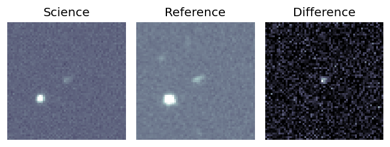
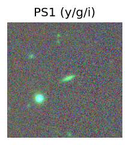
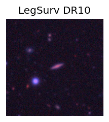
TESS: Sectors [42 43 70]
SDSS (<15 kpc):Found SDSS phot-z: z=0.14; peak abs mag = -19.16
PS1: 0 sources in 3 arcsec
LegacySurvey: 1 sources in 3 arcsec Closest: d = 1.25 arcsec, 115.1 deg (east of north) photoz=0.38 (68% bounds 0.22, 0.93), type=EXP peak abs mag (ext. corrected) = -21.56 (68% bounds -20.14, -23.88)
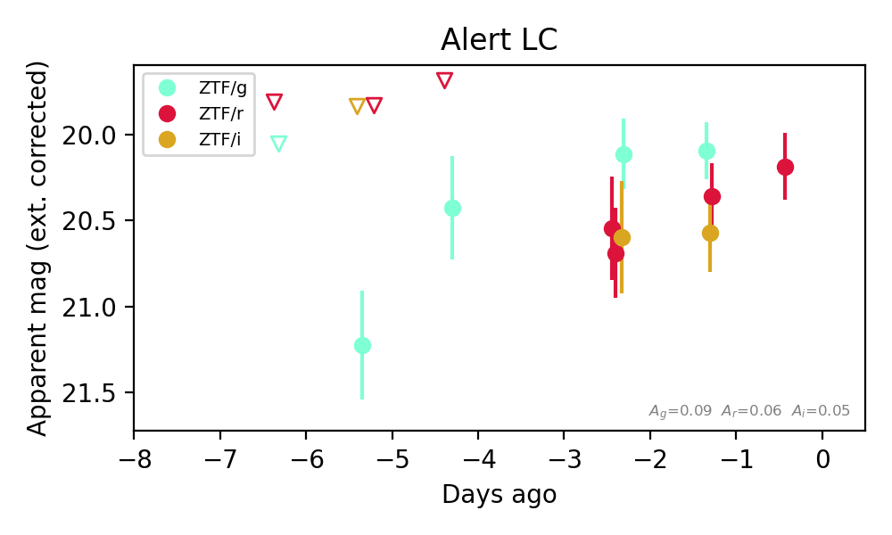
Extinction-corrected gr color:
From alerts: -0.26 +/- 0.25 mag
Extinction-corrected gi color:
From alerts: -0.48 +/- 0.28 mag
Extinction-corrected ri color:
From alerts: -0.21 +/- 0.3 mag
Consistent with synchrotron, g-r>0!
Rise Rate:
g: 0.23 mag/day
Fade Rate:
2. [ZTF] ZTF26acbsqrq (FBOT?) [Back to Top] [Share] [Trigger Swift] [Fritz Alert] [Fritz Source] [Lasair]RA, Dec: 50.17681, 1.81728 3h20m42.43s, 1d49m2.22sGalactic (l, b): 180.11929, -43.86667 ext(g-r) = 0.136


TESS: Sectors [ 4 31 109]
PS1: 0 sources in 3 arcsec
LegacySurvey: 1 sources in 3 arcsec Closest: d = 1.38 arcsec, 308.7 deg (east of north) photoz=1.02 (68% bounds 0.23, 1.5), type=REX peak abs mag (ext. corrected) = -25.29 (68% bounds -21.47, -26.32)

Extinction-corrected gr color:
From alerts: -0.23 +/- 0.18 mag
Rise Rate:
g: 0.17 mag/day
r: 0.23 mag/day
Fade Rate:
3. [ZTF] ZTF26acbsreq (FBOT?) [Back to Top] [Share] [Trigger Swift] [Fritz Alert] [Fritz Source] [Lasair]RA, Dec: 53.46527, 2.21341 3h33m51.66s, 2d12m48.28sGalactic (l, b): 182.61504, -41.11472 ext(g-r) = 0.095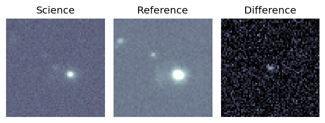
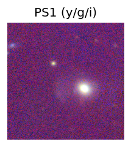
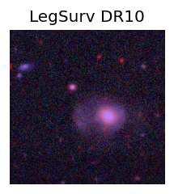
TESS: Sectors [ 31 109]
PS1: 0 sources in 3 arcsec
LegacySurvey: 1 sources in 3 arcsec Closest: d = 0.98 arcsec, 142.9 deg (east of north) photoz=0.43 (68% bounds 0.32, 0.64), type=REX peak abs mag (ext. corrected) = -22.63 (68% bounds -21.86, -23.65)
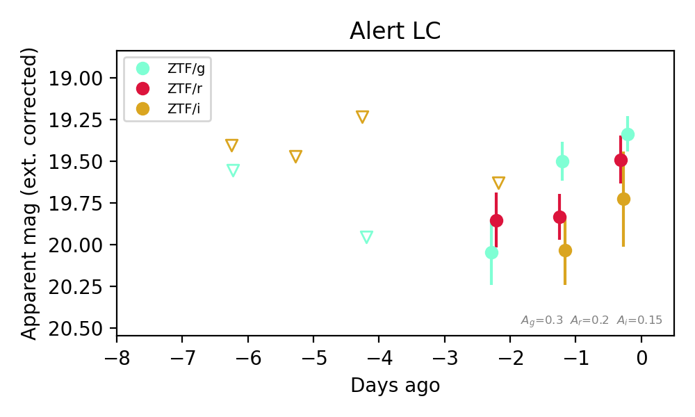
Extinction-corrected gr color:
From alerts: -0.15 +/- 0.18 mag
Extinction-corrected gi color:
From alerts: -0.39 +/- 0.31 mag
Extinction-corrected ri color:
From alerts: -0.24 +/- 0.32 mag
Consistent with synchrotron, g-r>0!
Rise Rate:
g: 0.3 mag/day
r: 0.08 mag/day
Fade Rate:
4. [ZTF] ZTF26acbujyo (FBOT?) [Back to Top] [Share] [Trigger Swift] [Fritz Alert] [Fritz Source] [Lasair]RA, Dec: 47.90869, -2.02672 3h11m38.09s, -2d-1m-36.18sGalactic (l, b): 182.1716, -48.09619 ext(g-r) = 0.069


TESS: Sectors [ 4 31 109]
NED host (10 arcsec):Found KUG 0309-022 (G, 1.8″); NED spec-z: z=0.0573 [zflag SUN]; peak abs mag = -19.52
PS1: 0 sources in 3 arcsec
LegacySurvey: 1 sources in 3 arcsec Closest: d = 1.24 arcsec, 22.0 deg (east of north) photoz=0.07 (68% bounds 0.01, 0.09), type=SER peak abs mag (ext. corrected) = -19.94 (68% bounds -16.49, -20.48)

Extinction-corrected gr color:
From alerts: -0.29 +/- 0.09 mag
Extinction-corrected gi color:
From alerts: -0.61 +/- 0.11 mag
Extinction-corrected ri color:
From alerts: -0.32 +/- 0.1 mag
Rise Rate:
g: 0.43 mag/day
r: 0.23 mag/day
i: 0.31 mag/day
Fade Rate:
5. [ZTF] ZTF26accartu (Afterglow?FBOT?) [Back to Top] [Share] [Trigger Swift] [Fritz Alert] [Fritz Source] [Lasair]RA, Dec: 19.94088, 25.46551 1h19m45.81s, 25d27m55.82sGalactic (l, b): 130.93938, -36.96543 ext(g-r) = 0.136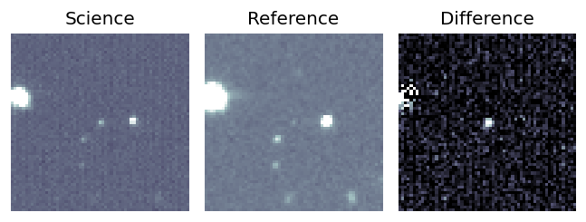
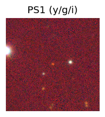
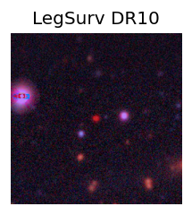
TESS: Sectors [17 57 84]
PS1: 0 sources in 3 arcsec
LegacySurvey: 1 sources in 3 arcsec Closest: d = 0.16 arcsec, 116.6 deg (east of north) photoz=0.62 (68% bounds 0.31, 0.73), type=EXP peak abs mag (ext. corrected) = -23.98 (68% bounds -22.21, -24.45)
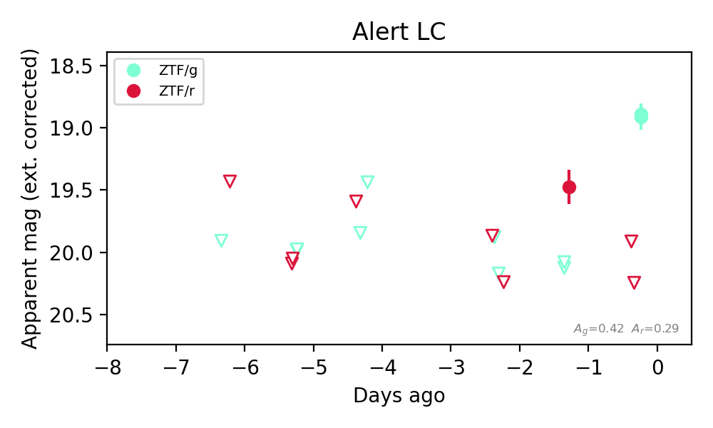
Extinction-corrected gr color:
From alerts: -1.34 +/- 99 mag
Rise Rate:
g: 1.1 mag/day
r: 0.8 mag/day
Fade Rate:
r: 0.82 mag/day
6. [ZTF] ZTF26accblpv (FBOT?) [Back to Top] [Share] [Trigger Swift] [Fritz Alert] [Fritz Source] [Lasair]RA, Dec: 48.32522, 24.72671 3h13m18.05s, 24d43m36.17sGalactic (l, b): 159.53291, -27.88303 ext(g-r) = 0.184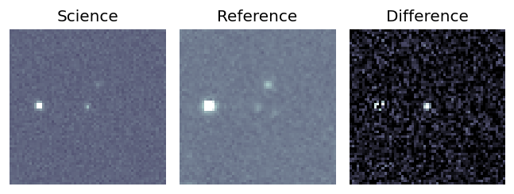
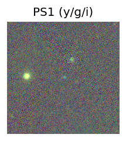

TESS: Sectors [18 42 43 44 70 71]
PS1: 1 source in 3 arcsec Closest: d = 0.69 arcsec photoz=0.57+/-0.58 peak abs mag = -22.99
LegacySurvey: 0 sources in 3 arcsec
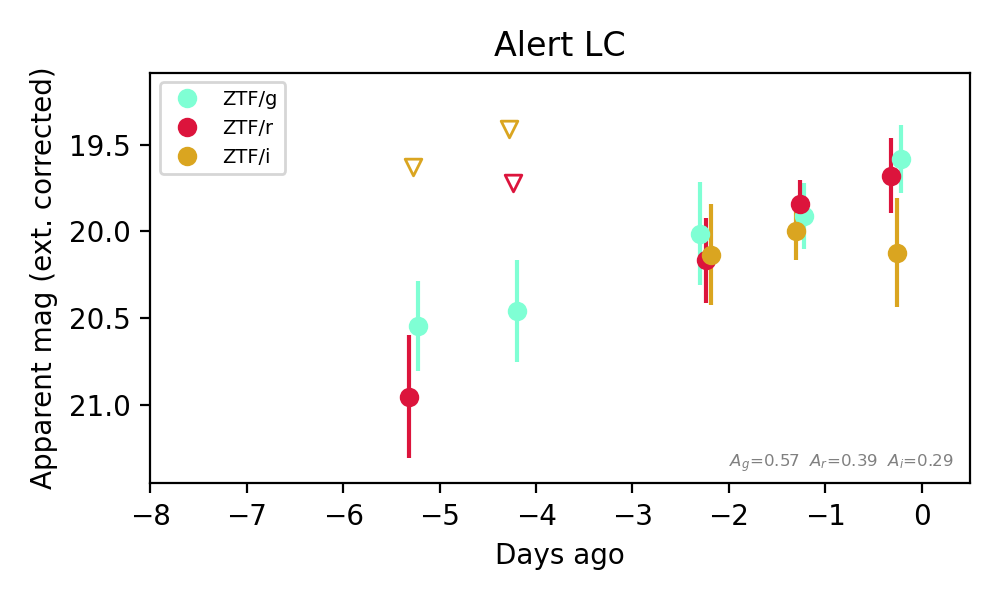
Extinction-corrected gr color:
From alerts: -0.09 +/- 0.29 mag
Extinction-corrected gi color:
From alerts: -0.54 +/- 0.37 mag
Extinction-corrected ri color:
From alerts: -0.44 +/- 0.38 mag
Consistent with synchrotron, g-r>0!
Rise Rate:
g: 0.19 mag/day
r: 0.26 mag/day
Fade Rate:
7. [ZTF] ZTF26accdxcj (FBOT?) [Back to Top] [Share] [Trigger Swift] [Fritz Alert] [Fritz Source] [Lasair]RA, Dec: 93.8339, 1.37711 6h15m20.14s, 1d22m37.60sGalactic (l, b): 207.55663, -7.38976 ext(g-r) = 0.484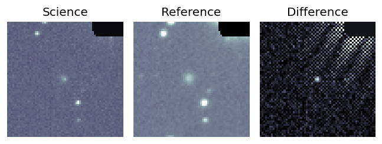
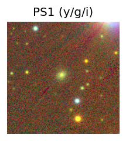

TESS: Sectors [ 6 33 87 111]
SDSS (<15 kpc):Found SDSS phot-z: z=0.04; peak abs mag = -18.05
PS1: 1 source in 3 arcsec Closest: d = 1.46 arcsec photoz=0.10+/-0.01 peak abs mag = -19.79
LegacySurvey: 0 sources in 3 arcsec
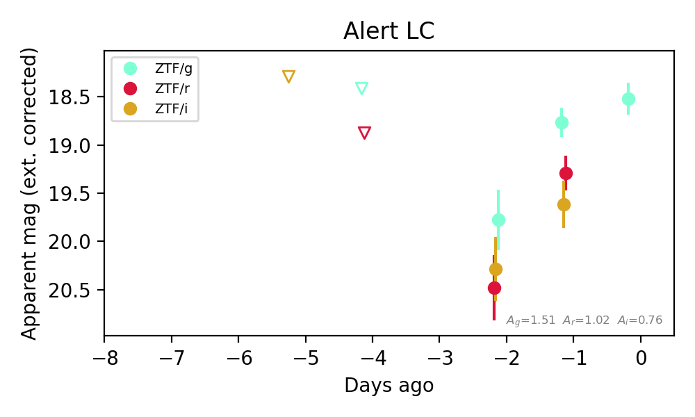
Extinction-corrected gr color:
From alerts: -0.52 +/- 0.23 mag
Extinction-corrected gi color:
From alerts: -0.85 +/- 0.29 mag
Extinction-corrected ri color:
From alerts: -0.33 +/- 0.3 mag
Rise Rate:
g: 0.51 mag/day
r: 1.12 mag/day
Fade Rate:
8. [ZTF] ZTF26accjfeo (Afterglow?FBOT?) [Back to Top] [Share] [Trigger Swift] [Fritz Alert] [Fritz Source] [Lasair]RA, Dec: 20.25602, 25.50914 1h21m1.44s, 25d30m32.90sGalactic (l, b): 131.28404, -36.88233 ext(g-r) = 0.145


TESS: Sectors [17 57 84]
SDSS (<15 kpc):Found SDSS phot-z: z=0.51; peak abs mag = -22.45
PS1: 0 sources in 3 arcsec
LegacySurvey: 1 sources in 3 arcsec Closest: d = 1.46 arcsec, 223.2 deg (east of north) photoz=1.05 (68% bounds 0.77, 1.28), type=PSF peak abs mag (ext. corrected) = -24.38 (68% bounds -23.53, -24.9)

Extinction-corrected gr color:
From alerts: -0.07 +/- 0.22 mag
Consistent with synchrotron, g-r>0!
Rise Rate:
g: 0.03 mag/day
r: 0.6 mag/day
Fade Rate:
9. [ZTF] ZTF26accjigm (Afterglow?) [Back to Top] [Share] [Trigger Swift] [Fritz Alert] [Fritz Source] [Lasair]RA, Dec: 47.4207, 37.36766 3h 9m40.97s, 37d22m3.58sGalactic (l, b): 151.19568, -17.80312 ext(g-r) = 0.156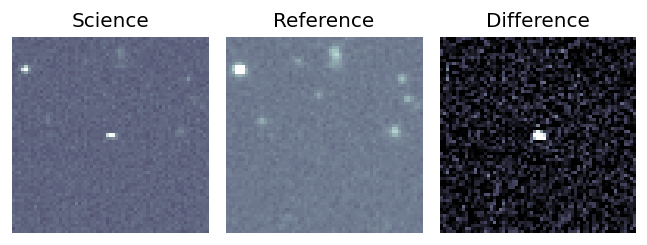
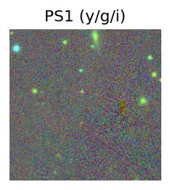

TESS: Sectors [18 58 85]
SDSS (<15 kpc):Found SDSS phot-z: z=0.91; peak abs mag = -25.47
PS1: 1 source in 3 arcsec Closest: d = 5.02 arcsec photoz=0.68+/-0.07 peak abs mag = -24.69
LegacySurvey: 0 sources in 3 arcsec
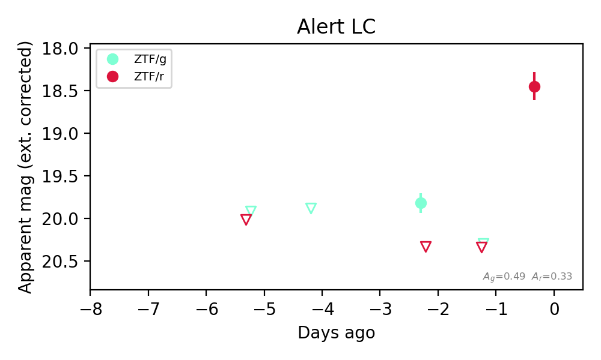
Extinction-corrected gr color:
From alerts: -0.51 +/- 99 mag
Rise Rate:
g: 0.05 mag/day
r: 2.07 mag/day
Fade Rate:
g: 0.44 mag/day
10. [ZTF] ZTF26acckdau (Afterglow?) [Back to Top] [Share] [Trigger Swift] [Fritz Alert] [Fritz Source] [Lasair]RA, Dec: 58.528, 25.92542 3h54m6.72s, 25d55m31.52sGalactic (l, b): 166.52659, -21.09933 ext(g-r) = 0.157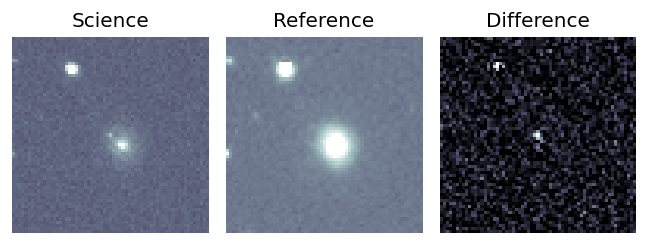
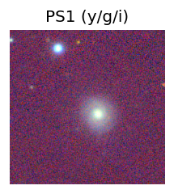

TESS: Sectors [42 43 44 71]
NED photo-z only: WISEA J035406.34+255527.0 (G, 5.0″) z=0.0663 [zflag PUN] — not used for peak abs mag
PS1: 1 source in 3 arcsec Closest: d = 4.96 arcsec photoz=0.07+/-0.01 peak abs mag = -17.70
LegacySurvey: 0 sources in 3 arcsec
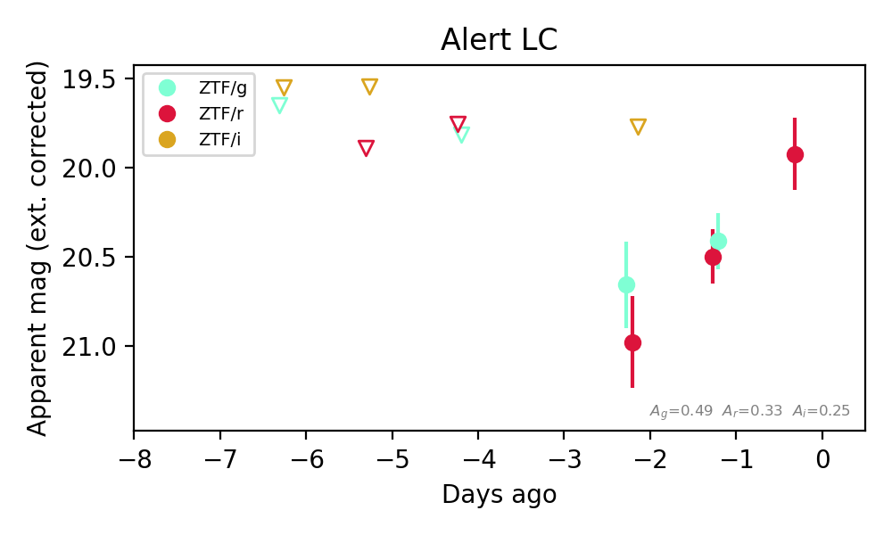
Extinction-corrected gr color:
From alerts: -0.09 +/- 0.22 mag
Extinction-corrected gi color:
From alerts: 0.89 +/- 99 mag
Extinction-corrected ri color:
From alerts: 1.21 +/- 99 mag
Consistent with synchrotron, g-r>0!
Rise Rate:
r: 0.57 mag/day
Fade Rate:
11. [ZTF] ZTF26acckgot (Afterglow?) [Back to Top] [Share] [Trigger Swift] [Fritz Alert] [Fritz Source] [Lasair]RA, Dec: 42.96868, 25.21791 2h51m52.48s, 25d13m4.47sGalactic (l, b): 154.58925, -30.1489 ext(g-r) = 0.134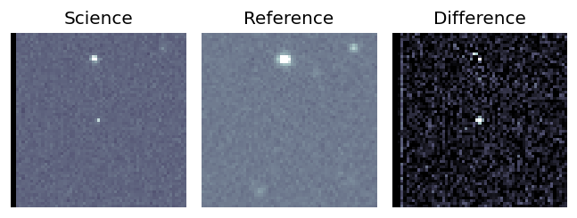
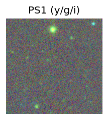

TESS: Sectors [18 42 43 44 58 70 71 85]
PS1: 0 sources in 3 arcsec
LegacySurvey: 0 sources in 3 arcsec
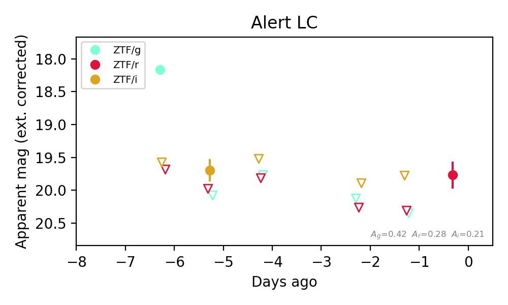
Extinction-corrected gr color:
From alerts: -1.51 +/- 99 mag
Extinction-corrected gi color:
From alerts: 0.38 +/- 99 mag
Extinction-corrected ri color:
From alerts: 0.27 +/- 99 mag
Rise Rate:
g: 0.44 mag/day
r: 0.57 mag/day
Fade Rate:
g: 1.78 mag/day
12. [ZTF] ZTF26accpjgl (Afterglow?) [Back to Top] [Share] [Trigger Swift] [Fritz Alert] [Fritz Source] [Lasair]RA, Dec: 136.61516, -11.18291 9h 6m27.64s, -11d-10m-58.49sGalactic (l, b): 240.24228, 23.37207 ext(g-r) = 0.038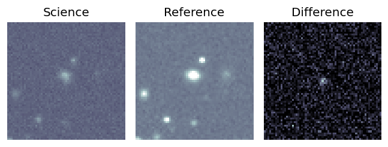
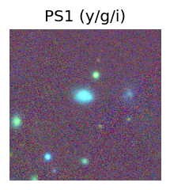
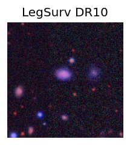
TESS: Sectors [ 8 35 61 99 112 113]
PS1: 0 sources in 3 arcsec
LegacySurvey: 1 sources in 3 arcsec Closest: d = 2.81 arcsec, 330.4 deg (east of north) photoz=0.41 (68% bounds 0.1, 1.18), type=EXP peak abs mag (ext. corrected) = -22.12 (68% bounds -18.67, -24.92)
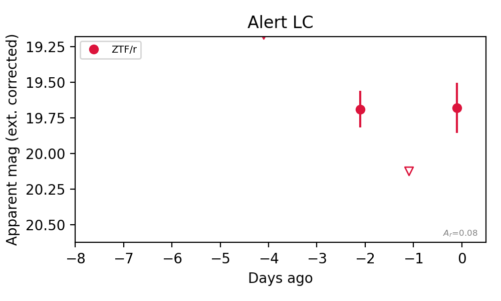
Rise Rate:
r: 0.45 mag/day
Fade Rate:
r: 0.44 mag/day